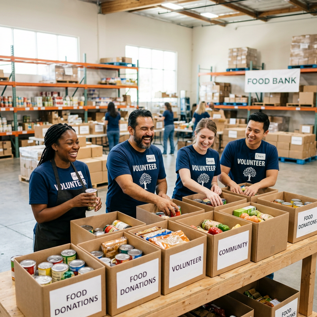

Families Served
Last Year
Fighting Hunger
in Our Community.
Community Services of Moses Lake believes everyone should have access to food. It is a basic human right.
33k
The Moses Lake Food Pantry
We provide emergency supplemental food on a weekly basis, with exceptions for the homeless, disaster victims, and special situations.
Zero Cost
We never charge for food or any other service we offer. More than half of the people receiving food from us are children and seniors.
Extended Reach
We distribute food to an additional 47 pantries across six counties. We are here when you need us.
View Pantry Map →Our Mission
Community Services of Moses Lake believes everyone should have access to food. It is a basic human right. Every person should have the opportunity to reach their full potential and live vibrant, productive lives – nutritious food is essential to success. Community Services of Moses Lake is inclusive of everyone, regardless of race, age, gender, family or immigration status, ability, how they worship, or who they love. We believe in an inclusive work environment where employees are welcomed, valued and respected. We believe that employees will be provided a safe work environment. We believe that diversity brings strength. We believe in equality of opportunity free from discrimination.
Donors & Sponsors
M. J. Murdock Charitable Trust
CSML is proudly supported by the M.J. Murdock Charitable Trust. This trust, created by the will of the late Melvin J. (Jack) Murdock, provides grants to nonprofit organizations in five states of the Pacific Northwest—Alaska, Idaho, Montana, Oregon, and Washington—that seek to strengthen the region’s educational, social, spiritual, and cultural base in creative and sustainable ways.
Marchand Charitable Trust
C. A. (Marc) Marchand was involved in City of Moses Lake projects for many years until starting Marchand Construction in 1964. Many local infrastructure projects were constructed by Marchand Construction. His legacy is represented by the two-toned green buildings situated on the land that was donated by the Marchand Charitable Trust.
In Remembrance: Peny Archer
Founding member of the food bank and driving force behind the Moses Lake Food Distribution Center. For Peny, the food bank was a big part of her life. Even as she battled terminal illness, she was at the food bank promoting drives and ensuring people understood the need. She built the beautiful operation that services 48 pantries across central and eastern Washington. Peny, you've truly made a positive difference and will be greatly missed.
Additional Supporters
We are so very thankful for the broad support of our community! Local farmers, food processing plants, corporations, professional organizations, churches, service clubs, businesses, and numerous unnamed individuals.
- REC Silicon
- Grant County Potato Commission
- Columbia Basin Herald
- Moses Lake Classic Car Club
- Lioness Club of Moses Lake
- Unchained Brotherhood
- People for People
- Moses Lake High School Key Club
- Moses Lake Christian Academy
- Moses Lake Seventh Day Adventists
- Sunderland Foundation
Get Help
To qualify for help from the food bank, your income must be below the amounts in the following table. You can qualify by self-declaration using our Membership Card Application. Cards must be renewed each year starting January 1st.
Hours of Operation
Open to public for food pick-up: Mon-Thurs, 11:00 a.m. to 2:45 p.m.
When you’ve been approved, we’ll email you a PDF of your membership card. No printer or smartphone? No problem! We can print it off for you if you visit our office.
| Household Size | Monthly Income Limit |
|---|---|
| 1 person | $2,608 |
| 2 people | $3,525 |
| 3 people | $4,442 |
| 4 people | $5,358 |
| 5 people | $6,275 |
| 6 people | $7,192 |
| Each additional person | add $917 |
Apply for a General Membership Card
Commodity Supplemental Food Program (CSFP)
Once per month, we distribute additional food to seniors who meet government guidelines in Moses Lake, Ephrata, Soap Lake, Grand Coulee, Othello, Selah, Kennewick, Richland, Benton City, and 11 sites in Whitman County. Seniors age 60 and over may apply for CSFP by completing an application available at the participating food bank lobby.
Giving Your Time
Because of volunteers, we can operate with only 10 full-time and 1 part-time employees. This keeps our administrative costs to about 2%.
Wonderful people donate their time unselfishly to keep our operations running smoothly. We love them, and we thank them for all they do. We are open from 8 a.m. to 2:45 p.m. Monday through Thursday for volunteer opportunities.

What Volunteers Do
- Sort food in the warehouse
- Box goods for distribution
- Bag product
- Greet clients and scan cards
- Hand out food
- Pick up goods from local stores ("breadrunning")
Volunteer Sign Up
If you’re interested in volunteering, please call us at 509-765-8101 or fill out the form below.
Make Donations
We welcome and encourage your financial support in our efforts to feed and help those in need. CSML is an IRS registered 501(c)(3) organization. Donations are tax deductible.
Financial Contributions
Your money helps us qualify for matching grants, pay for special needs food (baby formula, ready-to-eat boxes), support daily feeding programs, and cover site improvements.
Donate Online via DonateKindly
Or mail checks to:
CSML, PO Box 683, Moses Lake, WA 98837
Food & Product Donations
We accept donations from 8 a.m. to 2:45 p.m. Monday through Thursday.
We Accept:
- Fresh & Canned goods
- Hygiene products
- Bulk foods
- Refrig/Frozen (call ahead)
We Do NOT Accept:
- Recalled goods
- Homemade goods
- Opened goods
- Expired past sell-by date
Upcoming Events
Thanksgiving Turkey Drive
Every year, CSML sponsors a turkey drive for all clients that have a current membership card. Clients may drive to the distribution center and receive a free turkey or chicken with a box containing standard Thanksgiving meal items such as stuffing, potatoes, green beans, etc.
Stay tuned for this year’s donation dates and pick-up date.
Holiday Toy Drive
Our annual toy drive happens each year during November and December. Toys are generally distributed the week of Christmas. Last year, we were able to provide Christmas gifts to over 300 children!
Stay tuned for this year’s dates.
Board of Directors
Central to the operation of CSML is our Board of Directors. These diverse yet like-minded individuals bring collective wisdom to effectively guide our organization.
President
Christina Hansen
Elected Feb 2014. Dedicated volunteer since 2010. Former bookkeeper.
Director
Shelly Detrick
VP at Washington Trust Bank. Past President Habitat for Humanity Moses Lake.
Sec & Treasurer
Stroud Kunkle
CPA for 33 years. Board member since 1994. Rotary Club member.
Board Member
Tom Chaplin
President of CSML 2010-2017. Former Farmers Insurance Agency owner.
Board Member
Michael Glen Earl
Founding partner of Earl and Edwards, PLLC. Fluent in Spanish.
Management & Staff
CSML has key management positions working in concert to guide and manage all aspects of our company.
Administrative Manager
Lane Storwick
Operations Manager
Jim Gantenbien
Operations Support
Angie Moore
Driver / Warehouse
Tyson Carlos
Intake Lead / Accountant
Joanne Herzog
Driver / Warehouse
Andrew Matson
Warehouse Juggler & Fashion Icon
John Holland
Contact Us
Information
Phone: (509) 765-8101
Fax: (509) 765-7277
Email: CSML@mlfood.org
Hours
Food Pick-up: Mon-Thurs 11:00 am - 2:45 pm
Office Hours: Mon-Thurs 7:30 am - 3:00 pm
Mailing Address
CSML
PO Box 683
Moses Lake, WA 98837
Getting Here
GTA bus stop on nearest street corner.
People for People
has a dedicated time slot. Call 2-1-1.
Physical Address
9299 Beacon Rd NE
Moses Lake, WA 98837
Directions from I-90 (Exit 179):
- Head north toward SR-17 (1.1 mi)
- Slight right to stay on SR-17 N (3.8 mi)
- Turn right onto Grape Dr NE at the roundabout
- Turn right onto Beacon Rd NE
Destination will be on the right. It’s a large green
warehouse across the highway from Home Depot.